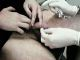
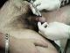
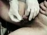
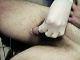
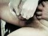
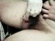
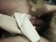
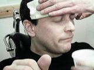
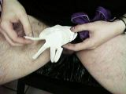
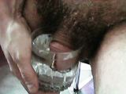

|
Getting a reverse Prince Albert...
using a Casio QV-10 digital stills camera. Hand-holding services courtesy of Rachel. Mark at Into You did the piercing. And, yes boys and girls, this hurt like hell!!!!!!!
Marking up. Mark cleans the area and carefully marks the entry hole after explaining the anatomy of the area to me. The middle section of the glans where he will pierce is mainly a spongy bag of blood-filled bubbles... or something. Ugh.
Fitting the receiving tube. This was pretty uncomfortable!
The pierce was so quick you missed it! Mark is amazingly fast even though this felt like it took forever. Mark is removing the receiving tube now... ...and fitting the ring. Again, this part was fairly uncomfortable as the ring tends to tug slightly as it is inserted. But it's over pretty quickly since Mark is so fast.
Mark applies a little Pakua... a wonderful natural healing lotion! Apparently its main ingredient is witchhazel which a friend of mine swears by for healing piercings. I used it on my nipples in the early stages and it is definitely a Good Thing(tm).
A couple of shots of the finished article! And was I smiling throughout the entire procedure?  Er, no... I was pale and sweating like this for most of it! But after Rachel administered some water I was smiling again... Mark Hopkins at work... cool labret stud, huh? Nice painting on the wall too.  An interesting looking condom... gotta keep it clean. Smiling again, on the train home...  Starting the aftercare treatment... three glasses of warm saline every day. And, no, it isn't having a drink!
diary | bodyart index Updated 4 March, 2001 |